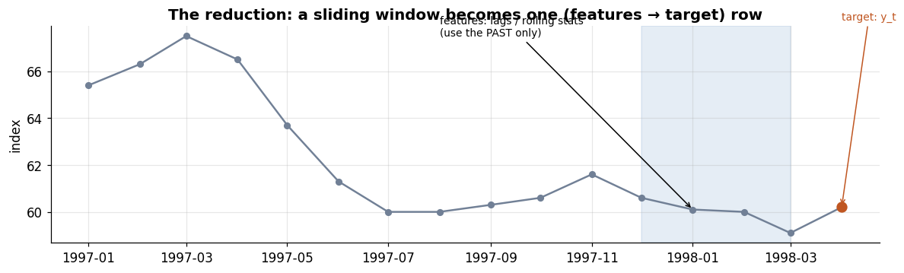
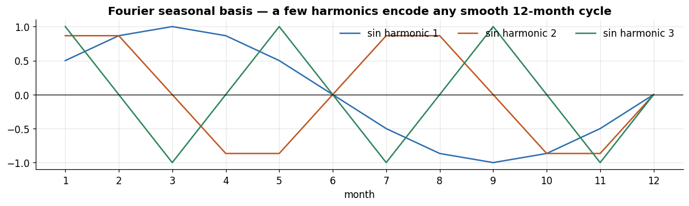

Series:Time Series Analysis in Python — from Statistical Modeling to Machine Learning
This is the hinge of the whole series. Parts 3–5 built bespoke time-series models; Part 6 taught us to evaluate them honestly. Part 7 performs the reduction that unlocks the entire supervised machine-learning toolbox: reframe forecasting as tabular regression. Once a series becomes a feature matrix X and a target y, any regressor — linear models, random forests, the gradient-boosting machines of Part 8, even the neural nets of Parts 9–10 — can forecast it. The models change; the feature engineering in this notebook is what they all stand on.
What you will learn
The ML reduction — turning a series into a supervised (X, y) problem
Lag features — autoregression in machine-learning clothing
Rolling / expanding aggregates and differences (with the leakage guard)
Calendar, cyclical, and Fourier features for seasonality; holidays
Exogenous variables and target transformations
A full feature pipeline + a backtested ML forecast and feature importances
Automated feature extraction with tsfresh
Dataset & discipline
Still monthly_price.csv (356 months), forecasting the Food Price Index — and every model is scored with the walk-forward backtesting from Part 6. New library: tsfresh.
1. The reduction: forecasting as supervised learning
A classical model treats a series as a single object with its own dynamics. The machine-learning reduction takes a different view: slide a window along the series and, at each time t, build a row whose features are functions of the past (values, aggregates, calendar) and whose target is the value we want to predict (\(y_t\) for one-step, or \(y_{t+h}\) for horizon h).
Stack those rows and you have an ordinary tabular dataset — feed it to any regressor. This is sometimes called time-delay embedding or sliding-window supervised learning.
The one inviolable rule (Part 6): every feature in row t may use information only up to the allowed cutoff — past values for anything derived from the target, and present values only for things genuinely known in advance (like the calendar month). Break this and you leak the future.
# a tiny schematic: one window -> one supervised rowfig, ax = plt.subplots(figsize=(11, 3.4))seg = y.iloc[60:76]ax.plot(seg.index, seg.values, "-o", color=PALETTE[5], ms=5)origin = seg.index[-1]ax.axvspan(seg.index[-5], seg.index[-2], color=PALETTE[0], alpha=0.12)ax.annotate("features: lags / rolling stats\n(use the PAST only)", xy=(seg.index[-4], seg.iloc[-4]), xytext=(seg.index[-9], seg.max()), fontsize=9, arrowprops=dict(arrowstyle="->"))ax.scatter([origin], [seg.iloc[-1]], color=PALETTE[1], zorder=5, s=70)ax.annotate("target: y_t", xy=(origin, seg.iloc[-1]), xytext=(origin, seg.iloc[-1]+8), fontsize=9, color=PALETTE[1], arrowprops=dict(arrowstyle="->", color=PALETTE[1]))ax.set_title("The reduction: a sliding window becomes one (features → target) row")ax.set_ylabel("index"); plt.tight_layout(); plt.show()

2. Lag features — autoregression, generalized
The most fundamental features are lags: past values of the series, \(y_{t-1}, y_{t-2}, \dots, y_{t-p}\). A linear model on lag features is an AR model (Part 4) — but now we can feed those same lags to a nonlinear learner that captures interactions no ARIMA can. Which lags? The ACF/PACF from Part 2 guide the short lags, and domain knowledge adds seasonal ones (lag 12 for monthly).
def make_lags(s, lags): out = pd.concat([s.shift(k) for k in lags], axis=1) out.columns = [f"lag{k}"for k in lags]return outlags = make_lags(y, [1, 2, 3, 6, 12])lags.head(14)
lag1
lag2
lag3
lag6
lag12
date
1992-01-01
NaN
NaN
NaN
NaN
NaN
1992-02-01
55.7
NaN
NaN
NaN
NaN
1992-03-01
55.5
55.7
NaN
NaN
NaN
1992-04-01
55.6
55.5
55.7
NaN
NaN
1992-05-01
54.1
55.6
55.5
NaN
NaN
1992-06-01
54.2
54.1
55.6
NaN
NaN
1992-07-01
54.8
54.2
54.1
55.7
NaN
1992-08-01
53.7
54.8
54.2
55.5
NaN
1992-09-01
53.8
53.7
54.8
55.6
NaN
1992-10-01
53.3
53.8
53.7
54.1
NaN
1992-11-01
51.7
53.3
53.8
54.2
NaN
1992-12-01
52.1
51.7
53.3
54.8
NaN
1993-01-01
52.0
52.1
51.7
53.7
55.7
1993-02-01
53.5
52.0
52.1
53.8
55.5
The first rows are NaN — a lag-12 feature needs 12 months of history before it exists. Those unusable rows are dropped once the full matrix is assembled. Each column is a clean, causal predictor: at time t it contains only values from beforet.
3. Rolling & expanding aggregates, and differences
Beyond raw lags, summaries of recent history are powerful features: rolling mean (local level), rolling std (local volatility), rolling min/max/median. Expanding aggregates summarize all history to date. Differences and returns capture momentum.
The leakage guard (critical): a plain rolling(w).mean() at time tincludes\(y_t\) itself. To predict \(y_t\) we must exclude it — so we shift(1)before rolling, making every window end at \(t-1\). This is the single most common feature-engineering bug in forecasting.
def make_roll(s, windows): out = {} s_past = s.shift(1) # <-- guard: windows end at t-1for w in windows: out[f"rmean{w}"] = s_past.rolling(w).mean() out[f"rstd{w}"] = s_past.rolling(w).std() out[f"rmin{w}"] = s_past.rolling(w).min() out[f"rmax{w}"] = s_past.rolling(w).max() out["mom_1"] = s.shift(1) - s.shift(2) # last month's change out["exp_mean"] = s.shift(1).expanding().mean()return pd.DataFrame(out)roll = make_roll(y, [3, 6, 12])roll[["rmean3", "rstd3", "rmean12", "mom_1", "exp_mean"]].dropna().head()
rmean3
rstd3
rmean12
mom_1
exp_mean
date
1993-01-01
51.933333
0.208167
53.875000
-0.1
53.875000
1993-02-01
52.533333
0.838650
53.691667
1.5
53.846154
1993-03-01
52.933333
0.814453
53.508333
-0.2
53.807143
1993-04-01
53.633333
0.416333
53.383333
0.8
53.826667
1993-05-01
53.733333
0.404145
53.358333
-0.3
53.825000
To see why the guard matters, compare a leaky centred/inclusive rolling mean with the correct trailing one near a turning point — the leaky version hugs the line because it already contains the current value.
Some features are known in advance — the calendar. Because we always know that next month is, say, March, calendar features may legitimately use the current timestamp (no leakage). Three encodings, in increasing sophistication:
Date-parts: month, quarter, year as integers or one-hot.
Cyclical (sin/cos): encode month on a circle so December (12) sits next to January (1) — a plain integer would wrongly place them 11 apart.
Fourier terms: pairs of sines/cosines at seasonal harmonics — a compact, smooth basis that captures seasonality with few features, and scales to long or multiple seasonal periods far better than one-hot months.
def calendar_features(idx, period=12, n_fourier=3): out = pd.DataFrame(index=idx) out["month"] = idx.month out["quarter"] = idx.quarter t = idx.month # position within the yearly cyclefor k inrange(1, n_fourier +1): out[f"sin{k}"] = np.sin(2* np.pi * k * t / period) out[f"cos{k}"] = np.cos(2* np.pi * k * t / period)return outcal = calendar_features(y.index, period=12, n_fourier=3)cal.head(3)
month
quarter
sin1
cos1
sin2
cos2
sin3
cos3
date
1992-01-01
1
1
0.500000
8.660254e-01
8.660254e-01
0.5
1.000000e+00
6.123234e-17
1992-02-01
2
1
0.866025
5.000000e-01
8.660254e-01
-0.5
1.224647e-16
-1.000000e+00
1992-03-01
3
1
1.000000
6.123234e-17
1.224647e-16
-1.0
-1.000000e+00
-1.836970e-16
# how Fourier terms reconstruct a smooth seasonal shapemonths = np.arange(1, 13)fig, ax = plt.subplots(figsize=(11, 3.4))for k, c inzip([1, 2, 3], PALETTE): ax.plot(months, np.sin(2*np.pi*k*months/12), color=c, label=f"sin harmonic {k}")ax.set_xticks(months); ax.axhline(0, color="k", lw=.8)ax.set_title("Fourier seasonal basis — a few harmonics encode any smooth 12-month cycle")ax.set_xlabel("month"); ax.legend(frameon=False, ncol=3)plt.tight_layout(); plt.show()

Holidays. For daily/weekly business data, holiday and event flags (Christmas, Black Friday, promotions) are among the strongest features — typically encoded as binary indicators, sometimes with lead/lag windows. Our monthly commodity data has no holiday structure, so we note the technique and move on; Prophet (Part 5) has a built-in holidays interface for when you need it.
5. Exogenous variables and target transformations
Exogenous features. Other series can help predict the target — but the Part 4/5 rule applies: to forecast \(y_t\) you may use an exogenous variable’s value only if it is known in advance, otherwise use its lag. We add lagged Energy and VIX.
def exog_features(df, cols, lags): out = {}for c in cols:for k in lags: out[f"{c}_lag{k}"] = df[c].shift(k)return pd.DataFrame(out, index=df.index)exo = exog_features(df, ["Energy_Price_Index", "VIX_Index"], [1, 3])exo.dropna().head(3)
Energy_Price_Index_lag1
Energy_Price_Index_lag3
VIX_Index_lag1
VIX_Index_lag3
date
1992-04-01
23.8
23.7
17.5
17.7
1992-05-01
25.2
23.8
16.6
17.5
1992-06-01
26.3
23.8
15.1
17.5
Target transformations. The target can be transformed to make the learning problem easier — but every transform must be invertible so forecasts return to the original scale, and any transform fitted from data (scaling) must be fit on training data only (Part 6). Common choices: log / Box–Cox to stabilize variance (Part 2), differencing the target to remove trend, and scaling. The clean way to scale without leakage is inside a Pipeline, so the scaler re-fits on each fold’s training set.
# scaling belongs INSIDE the pipeline so it re-fits per fold (no leakage)demo_pipe = make_pipeline(StandardScaler(), Ridge(alpha=1.0))print("Leakage-safe pipeline:", " -> ".join(s[0] for s in demo_pipe.steps))print("The scaler's mean/std are learned on train folds only, never the test fold.")
Leakage-safe pipeline: standardscaler -> ridge
The scaler's mean/std are learned on train folds only, never the test fold.
6. A full feature pipeline and a backtested ML forecast
Now assemble everything into one matrix and let regressors forecast — scored with the walk-forward backtest from Part 6. We build a one-step target and compare Ridge and Random Forest against the naive benchmark.
def build_matrix(y, df): X = pd.concat([ make_lags(y, [1, 2, 3, 6, 12]), make_roll(y, [3, 6, 12]), calendar_features(y.index, 12, n_fourier=2), exog_features(df, ["Energy_Price_Index", "VIX_Index"], [1, 3]), ], axis=1)# one-step target is y_t itself; features above already use only info <= t-1 data = pd.concat([X, y.rename("y")], axis=1).dropna()return data.iloc[:, :-1], data["y"]X, yt = build_matrix(y, df)print("feature matrix:", X.shape, "\nfeatures:", list(X.columns))
def backtest_ml(models, X, yt, n_splits=6, h=12, m=12): tscv = TimeSeriesSplit(n_splits=n_splits, test_size=h) acc = {name: [] for name in models}for tri, tei in tscv.split(X): Xtr, Xte = X.iloc[tri], X.iloc[tei] ytr, yte = yt.iloc[tri], yt.iloc[tei] denom = np.mean(np.abs(ytr.values[m:] - ytr.values[:-m]))for name, factory in models.items():if name =="Naive": pred = Xte["lag1"].values # one-step naive = last valueelse: mdl = factory(); mdl.fit(Xtr, ytr); pred = mdl.predict(Xte) acc[name].append(mae(yte, pred) / denom)return pd.DataFrame({"model": list(acc), "MASE_mean": [round(np.mean(v), 3) for v in acc.values()],"MASE_std": [round(np.std(v), 3) for v in acc.values()]} ).sort_values("MASE_mean").reset_index(drop=True)models = {"Naive": None,"Ridge": lambda: make_pipeline(StandardScaler(), Ridge(alpha=1.0)),"RandomForest": lambda: RandomForestRegressor(n_estimators=300, random_state=0),}backtest_ml(models, X, yt)
model
MASE_mean
MASE_std
0
Naive
0.214
0.089
1
Ridge
0.222
0.082
2
RandomForest
0.270
0.114
The honest result is instructive and consistent with the whole series: on a single, smooth, monthly series the ML models essentially tie the naive benchmark one step ahead — Ridge matches it, the forest does slightly worse (more variance on little data). The lag features simply recover the persistence that naive already exploits. The reduction did not fail — it worked exactly as designed — but it reminds us that capability is not the same as advantage. The ML payoff appears when there is structure to exploit: many series to learn across, strong exogenous signals, and nonlinear interactions — precisely what Part 8’s global gradient-boosted models target.
What the model finds useful is itself informative — the feature importances.
Recent lags and rolling means dominate; the calendar/Fourier and exogenous terms contribute little — a quantitative echo of everything Parts 1–5 found on this dataset (light seasonality, and energy that doesn’t lead food, per Part 5’s Granger test). The features honestly report that the signal here is mostly persistence.
Multi-step with the direct strategy — and a leakage warning
To forecast 24 months with a one-step regressor we use the direct strategy (Part 6): one model per horizon h, predicting \(y_{t+h}\) from time-t features.
Watch the target construction. The direct target must be built from the training series only — y_train.shift(-h). If you instead shift the full series and subset, the later training rows pull their targets from the test period: instant leakage, and a forecast that looks unbelievably good. (This is the Part 6 trap in a new disguise; it is genuinely easy to introduce here.)
The forest forecast stays nearly flat and under-shoots the 2020–21 surge — a tree cannot predict values above its training range, a fundamental limit of tree-based extrapolation worth remembering. It still edges naive here, but no feature set lets a bounded learner foresee an out-of-range shock. This is the right expectation to carry into Part 8.
7. Automated feature extraction with tsfresh
Hand-crafting features is transparent but limited. tsfresh automatically computes hundreds of features per window — statistical moments, autocorrelations, entropy, spectral and nonlinearity measures — and can statistically select the relevant ones. It expects long format: one row per (window id, time, value).
We build short rolling windows and extract the minimal feature set (fast) to show the mechanics.
from tsfresh import extract_featuresfrom tsfresh.feature_extraction import MinimalFCParameters# long-format rolling windows of length 12, one id per window endrecords, vals, idx = [], y.values, y.indexfor t inrange(12, len(y)):for j, v inenumerate(vals[t-12:t]): records.append({"id": idx[t], "time": j, "value": v})long= pd.DataFrame(records)feat = extract_features(long, column_id="id", column_sort="time", column_value="value", default_fc_parameters=MinimalFCParameters(), disable_progressbar=True, n_jobs=0)print("tsfresh feature matrix:", feat.shape)feat.iloc[:3, :6]
tsfresh feature matrix: (344, 10)
value__sum_values
value__median
value__mean
value__length
value__standard_deviation
value__variance
1993-01-01
646.5
53.95
53.875000
12.0
1.345440
1.810208
1993-02-01
644.3
53.75
53.691667
12.0
1.229131
1.510764
1993-03-01
642.1
53.60
53.508333
12.0
1.103372
1.217431
Each window is now summarized by a battery of features, indexed by the window’s end date so it aligns with our target. With the full EfficientFCParameters you get hundreds of features, and tsfresh.select_features runs hypothesis tests to keep only those significantly related to the target.
Three cautions that Part 6 makes non-negotiable:
Leakage — build each window from past values only (as above), and run feature selectioninside the CV fold, never on the full dataset.
Overfitting — hundreds of auto-features on a few hundred rows invites it; select aggressively and validate with the backtest.
Cost & interpretability — automated banks are compute-heavy and opaque; often a handful of hand-built lags/rolls (Sections 2–3) match them at a fraction of the cost. tsfeatures (from the Nixtla ecosystem) is a lighter alternative focused on classic time-series characteristics.
8. Exercises
Lag depth. Re-run the one-step backtest with only [1], then [1..12], then [1..24] lags. Where does adding lags stop helping?
Fourier order. Vary n_fourier from 1 to 6 in the calendar features for Rice_Price. Does more seasonal flexibility improve the backtest?
Exogenous lift. Add lagged fertilizer prices as exogenous features and check the RF importances. Do any exogenous features rise to the top?
Transform the target. Fit the pipeline to predict log Food Price Index, invert the forecast, and compare RMSE to the untransformed model.
tsfresh selection. Use EfficientFCParameters + select_featuresinside a single CV fold and compare a Ridge on the selected features to your hand-built matrix.
lags=[1] -> MASE 0.221
lags=[1, 2, 3, 6, 12] -> MASE 0.209
lags=[1, 2, 3, 4, 5, 6, 7 -> MASE 0.210
9. Key takeaways
The ML reduction reframes forecasting as tabular regression: a sliding window becomes a row of features → target, so any regressor can forecast.
Lag features are autoregression generalized; rolling/expanding aggregates and differences summarize recent history — always with the shift(1) leakage guard so windows end before the prediction time.
Calendar features are known in advance (safe at time t); encode seasonality cyclically (sin/cos) or with compact Fourier terms; add holidays for business data.
Exogenous drivers enter as lags (unless known in advance); target transforms must be invertible, and any fitted scaling belongs inside a pipeline to stay leak-free.
Automated extraction (tsfresh) scales feature creation to hundreds of candidates — powerful, but demands in-fold selection, overfitting control, and a cost/interpretability check.
On this single smooth series the ML models recovered persistence rather than beating it — capability, not yet advantage. The advantage arrives with scale and structure, which is exactly Part 8.
What’s next — Part 8: Machine Learning Forecasting
Part 8 puts real learners on this feature matrix: regularized linear models, and gradient-boosted trees (XGBoost, LightGBM, CatBoost). Crucially it introduces global models — one model trained across many series at once — and the skforecast/mlforecast tooling that automates the recursive/direct machinery, where the ML reduction finally pays off.